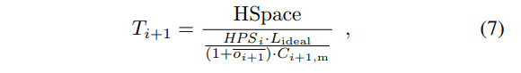

Number: "0020"
Category: Informational
Status: Draft
Author: Ren Zhang
Organization: Nervos Foundation
Created: 2019-6-19
CKB Consensus Protocol
Abstract
Bitcoin's Nakamoto Consensus (NC) is well-received due to its simplicity and low communication overhead. However, NC suffers from two kinds of drawback: first, its transaction processing throughput is far from satisfactory; second, it is vulnerable to a selfish mining attack, where attackers can gain more block rewards by deviating from the protocol's prescribed behavior.
The CKB consensus protocol is a variant of NC that raises its performance limit and selfish mining resistance while keeping its merits. By identifying and eliminating the bottleneck in NC's block propagation latency, our protocol supports very short block interval without sacrificing security. The shortened block interval not only raises the throughput, but also lowers the transaction confirmation latency. By incorporating all valid blocks in the difficulty adjustment, selfish mining is no longer profitable in our protocol.
Motivation
Although a number of non-NC consensus mechanisms have been proposed, NC has the following threefold advantage comparing with its alternatives. First, its security is carefully scrutinized and well-understood [1, 2, 3, 4, 5, 6, 7, 8], whereas alternative protocols often open new attack vectors, either unintentionally [1, 2] or by relying on security assumptions that are difficult to realize in practice [1, 2]. Second, NC minimizes the consensus protocol's communication overhead. In the best-case scenario, propagating a 1MB block in Bitcoin is equivalent to broadcasting a compact block message of roughly 13KB [1, 2]; valid blocks are immediately accepted by all honest nodes. In contrast, alternative protocols often demand a non-negligible communication overhead to certify that certain nodes witness a block. For example, Algorand demands that each block be accompanied by 300KB of block certificate. Third, NC's chain-based topology ensures that a transaction global order is determined at block generation, which is compatible with all smart contract programming models. Protocols adopting other topologies either abandon the global order or establish it after a long confirmation delay [1, 2], limiting their efficiency or functionality.
Despite NC's merits, a scalability barrier hinders it from processing more than a few transactions per second. Two parameters collectively cap the system's throughput: the maximum block size and the expected block interval. For example, Bitcoin enforces a roughly 4MB block size upper bound and targets a 10-minute block interval and with its difficulty adjustment mechanism, translating to roughly ten transactions per second (TPS). Increasing the block size or reducing the block interval leads to longer block propagation latency or more frequent block generation events, respectively; both approaches raise the fraction of blocks generated during other blocks' propagation, thus raising the fraction of competing blocks. As at most one block among the competing ones contributes to transaction confirmation, the nodes' bandwidth on propagating other orphaned blocks is wasted, limiting the system's effective throughput. Moreover, raising the orphan rate downgrades the protocol's security by lowering the difficulty of double-spending attacks [1, 2].
Moreover, the security of NC is undermined by a selfish mining attack, which allows attackers to gain unfair block rewards by deliberately orphaning blocks mined by other miners. Researchers observe that the unfair profit roots in NC's difficulty adjustment mechanism, which neglects orphaned blocks when estimating the network's computing power. Through this mechanism, the increased orphan rate caused by selfish mining leads to lower mining difficulty, enabling the attacker's higher time-averaged block reward [1, 2, 3].
In this RFC, we present the CKB consensus protocol, a consensus protocol that raises NC's performance limit and selfish mining resistance while keeping all NC's merits. Our protocol supports very short block interval by reducing the block propagation latency. The shortened block interval not only raises the blockchain's throughput, but also minimizes the transaction confirmation latency without decreasing the level of confidence, as the orphan rate remains low. Selfish mining is no longer profitable as we incorporate all blocks, including uncles, in the difficulty adjustment when estimating the network's computing power, so that the new difficulty is independent of the orphan rate.
Technical Overview
Our consensus protocol makes three changes to NC.
Eliminating the Bottleneck in Block Propagation
Bitcoin's developers identify that when the block interval decreases, the bottleneck in block propagation latency is transferring fresh transactions, which are newly broadcast transactions that have not finished propagating to the network when embedded in the latest block. Nodes that have not received these transactions must request them before forwarding the block to their neighbors. The resulted delay not only limits the blockchain's performance, but can also be exploited in a de facto selfish mining attack, where attackers deliberately embed fresh transactions in their blocks, hoping that the longer propagation latency gives them an advantage in finding the next block to gain more rewards.
Departing from this observation, our protocol eliminates the bottleneck by decoupling NC's transaction confirmation into two separate steps: propose and commit. A transaction is proposed if its truncated hash, named txpid, is embedded in the proposal zone of a blockchain block or its uncles---orphaned blocks that are referred to by the blockchain block. Newly proposed transactions affect neither the block validity nor the block propagation, as a node can start transferring the block to its neighbors before receiving these transactions. The transaction is committed if it appears in the commitment zone in a window starting several blocks after its proposal. This two-step confirmation rule eliminates the block propagation bottleneck, as committed transactions in a new block are already received and verified by all nodes when they are proposed. The new rule also effectively mitigates de facto selfish mining by limiting the attack time window.
Utilizing the Shortened Latency for Higher Throughput
Our protocol prescribes that blockchain blocks refer to all orphaned blocks as uncles. This information allows us to estimate the current block propagation latency and dynamically adjust the expected block interval, increasing the throughput when the latency improves. Accordingly, our difficulty adjustment targets a fixed orphan rate to utilize the shortened latency without compromising security. The protocol hard-codes the upper and lower bounds of the interval to defend against DoS attacks and avoid overloading the nodes. In addition, the block reward is adjusted proportionally to the expected block interval within an epoch, so that the expected time-averaged reward is independent of the block interval.
Mitigating Selfish Mining Attacks
Our protocol incorporate all blocks, including uncles, in the difficulty adjustment when estimating the network's computing power, so that the new difficulty is independent of the orphan rate, following the suggestion of Vitalik, Grunspan and Perez-Marco.
In addition, we prove that selfish mining is no longer profitable in our protocol. This prove is non-trivial as Vitalik, Grunspan and Perez-Marco's informal arguments do not rule out the possibility that the attacker adapts to the modified mechanism and still gets unfair block reward. For example, the attacker may temporarily turn off some mining gears in the first epoch, causing the modified difficulty adjustment algorithm to underestimate the network's computing power, and starts selfish mining in the second epoch for a higher overall time-averaged reward. We prove that in our protocol, selfish mining is not profitable regardless of how the attacker divides its mining power among honest mining, selfish mining and idle, and how many epochs the attack involves. The detailed proof will be released later.
Specification
Two-Step Transaction Confirmation
In our protocol, we use a two-step transaction confirmation to eliminate the aforementioned block propagation bottleneck, regardless of how short the block interval is. We start by defining the two steps and the block structure, and then introduce the new block propagation protocol.
Definitions
Definition 1: A transaction’s proposal id
txpidis defined as the first l bits of the transaction hashtxid.
In our protocol, txpid does not need to be as globally unique as txid, as a txpid is used to identify a transaction among several neighboring blocks. Since we embed txpids in both blocks and compact blocks, sending only the truncated txids could reduce the bandwidth consumption.
When multiple transactions share the same txpids, all of them are considered proposed. In practice, we can set l to be large enough so that the computational effort of finding a collision is non-trivial.
Definition 2: A block B1 is considered to be the uncle of another block B2 if all of the following conditions are met: (1) B1 and B2 are in the same epoch, sharing the same difficulty; (2) height(B2) > height(B1); (3) B2 is the first block in its chain to refer to B1.
Our uncle definition is different from that of Ethereum, in that we do not consider how far away the two blocks' first common ancestor is, as long as the two blocks are in the same epoch.
Definition 3: A transaction is proposed at height hp if its
txpidis in the proposal zone of the main chain block with height hp and this block’s uncles.
It is possible that a proposed transaction is previously proposed, in conflict with other transactions, or even malformed. These incidents do not affect the block’s validity, as the proposal zone is used to facilitate transaction synchronization.
Definition 4: A non-coinbase transaction is committed at height hc if all of the following conditions are met: (1) the transaction is proposed at height hp of the same chain, and wclose ≤ hc − hp ≤ wfar (2) the transaction is in the commitment zone of the main chain block with height hc; (3) the transaction is not in conflict with any previously-committed transactions in the main chain. The coinbase transaction is committed at height hc if it satisfies (2).
wclose and wfar define the closest and farthest on-chain distance between a transaction’s proposal and commitment. We require wclose to be large enough so that wclose block intervals are long enough for a transaction to be propagated to the network.
These two parameters are also set according to the maximum number of transactions in the proposed transaction pool of a node’s memory. As the total number of proposed transactions is limited, they can be stored in the memory so that there is no need to fetch a newly committed transaction from the hard disk in most occasions.
A transaction is considered embedded in the blockchain when it is committed. Therefore, a receiver that requires σ confirmations needs to wait for at least wclose +σ blocks after the transaction is broadcast to have confidence in the transaction.
In practice, this wclose - block extra delay is compensated by our protocol’s shortened block interval, so that the usability is not affected.
Block and Compact Block Structure
A block in our protocol includes the following fields:
| Name | Description |
|---|---|
| header | block metadata |
| commitment zone | transactions committed in this block |
| proposal zone | txpids proposed in this block |
| uncle headers | headers of uncle blocks |
| uncles’ proposal zones | txpids proposed in the uncles |
Similar to NC, in our protocol, a compact block replaces a block’s commitment zone with the transactions’ shortids, a salt and a list of prefilled transactions. All other fields remain unchanged in the compact block.
Additional block structure rules:
- The total size of the first four fields should be no larger than the hard-coded block size limit. The main purpose of implementing a block size limit is to avoid overloading public nodes' bandwidth. The uncle blocks’ proposal zones do not count in the limit as they are usually already synchronized when the block is mined.
- The number of
txpids in a proposal zone also has a hard-coded upper bound.
Two heuristic requirements may help practitioners choose the parameters. First, the upper bound number of txpids in a proposal zone should be no smaller than the maximum number of committed transactions in a block, so that even if wclose=wfar, this bound is not the protocol's throughput bottleneck. Second, ideally the compact block should be no bigger than 80KB. According to a 2016 study by Croman et al., messages no larger than 80KB have similar propagation latency in the Bitcoin network; larger messages propagate slower as the network throughput becomes the bottleneck. This number may change as the network condition improves.
Block Propagation Protocol
In line with [1, 2, 3], nodes should broadcast all blocks with valid proofs-of-work, including orphans, as they may be referred to in the main chain as uncles. Valid proofs-of-work cannot be utilized to pollute the network, as constructing them is time-consuming.
Our protocol’s block propagation protocol removes the extra round trip of fresh transactions in most occasions. When the round trip is inevitable, our protocol ensures that it only lasts for one hop in the propagation. This is achieved by the following three rules:
-
If some committed transactions are previously unknown to the sending node, they will be embedded in the prefilled transaction list and sent along with the compact block. This only happens in a de facto selfish mining attack, as otherwise transactions are synchronized when they are proposed. This modification removes the extra round trip if the sender and the receiver share the same list of proposed, but-not-broadcast transactions.
-
If certain committed transactions are still missing, the receiver queries the sender with a short timeout. Triggering this mechanism requires not only a successful de facto selfish mining attack, but also an attack on transaction propagation to cause inconsistent proposed transaction pools among the nodes. Failing to send these transactions in time leads to the receiver disconnecting and blacklisting the sender. Blocks with incomplete commitment zones will not be propagated further.
-
As long as the commitment zone is complete and valid, a node can start forwarding the compact block before receiving all newly-proposed transactions. In our protocol, a node requests the newly-proposed transactions from the upstream peer and sends compact blocks to other peers simultaneously. This modification does not downgrade the security as transactions in the proposal zone do not affect the block’s validity.
The first two rules ensure that the extra round trip caused by a de facto selfish mining attack never lasts for more than one hop.
Dynamic Difficulty Adjustment Mechanism
We modify the Nakamoto Consensus difficulty adjustment mechanism, so that: (1) Selfish mining is no longer profitable; (2) Throughput is dynamically adjusted based on the network’s bandwidth and latency. To achieve (1), our protocol incorporates all blocks, instead of only the main chain, in calculating the adjusted hash rate estimation of the last epoch, which determines the amount of computing effort required in the next epoch for each reward unit. To achieve (2), our protocol calculates the number of main chain blocks in the next epoch with the last epoch’s orphan rate. The block reward and target are then computed by combining these results.
Additional constraints are introduced to maximize the protocol’s compatibility:
-
All epochs have the same expected length Lideal, and the maximum block reward issued in an epoch R(i) depends only on the epoch number i, so that the dynamic block interval does not complicate the reward issuance policy.
-
Several upper and lower bounds are applied to the hash rate estimation and the number of main chain blocks, so that our protocol does not harm the decentralization or attack-resistance of the network.
Notations
Similar to Nakamoto Consensus , our protocol’s difficulty adjustment algorithm is executed at the end of every epoch. It takes four inputs:
| Name | Description |
|---|---|
| Ti | Last epoch’s target |
| Li | Last epoch’s duration: the timestamp difference between epoch i and epoch (i − 1)’s last blocks |
| Ci,m | Last epoch’s main chain block count |
| Ci,o | Last epoch’s orphan block count: the number of uncles embedded in epoch i’s main chain |
Among these inputs, Ti and Ci,m are determined by the last iteration of difficulty adjustment; Li and Ci,o are measured after the epoch ends. The orphan rate oi is calculated as Ci,o / Ci,m. We do not include Ci,o in the denominator to simplify the equation. As some orphans at the end of the epoch might be excluded from the main chain by an attack, oi is a lower bound of the actual number. However, the proportion of deliberately excluded orphans is negligible as long as the epoch is long enough, as the difficulty of orphaning a chain grows exponentially with the chain length.
The algorithm outputs three values:
| Name | Description |
|---|---|
| Ti+1 | Next epoch’s target |
| Ci+1,m | Next epoch’s main chain block count |
| ri+1 | Next epoch’s block reward |
If the network hash rate and block propagation latency remains constant, oi+1 should reach the ideal value oideal, unless Ci+1,m is equal to its upper bound Cmmax or its lower bound Cmmin . Epoch i + 1 ends when it reaches Ci+1,m main chain blocks, regardless of how many uncles are embedded.
Computing the Adjusted Hash Rate Estimation
The adjusted hash rate estimation, denoted as HPSi is computed by applying a dampening factor τ to the last epoch’s actual hash rate  . The actual hash rate is calculated as follows:
. The actual hash rate is calculated as follows:
where:
- HSpace is the size of the entire hash space, e.g., 2^256 in Bitcoin,
- HSpace/Ti is the expected number of hash operations to find a valid block, and
- Ci,m + Ci,o is the total number of blocks in epoch i
 is computed by dividing the expected total hash operations with the duration Li
is computed by dividing the expected total hash operations with the duration Li
Now we apply the dampening filter:

where HPSi−1 denotes the adjusted hash rate estimation output by the last iteration of the difficulty adjustment algorithm. The dampening factor ensures that the adjusted hash rate estimation does not change more than a factor of τ between two consecutive epochs. This adjustment is equivalent to the Nakamoto Consensus application of a dampening filter. Bounding the adjustment speed prevents the attacker from arbitrarily biasing the difficulty and forging a blockchain, even if some victims’ network is temporarily controlled by the attacker.
Modeling Block Propagation
It is difficult, if not impossible, to model the detailed block propagation procedure, given that the network topology changes constantly over time. Luckily, for our purpose, it is adequate to express the influence of block propagation with two parameters, which will be used to compute Ci+1,m later.
We assume all blocks follow a similar propagation model, in line with [1, 2]. In the last epoch, it takes d seconds for a block to be propagated to the entire network, and during this process, the average fraction of mining power working on the block’s parent is p. Therefore, during this d seconds, HPSi × dp hash operations work on the parent, thus not contributing to extending the blockchain, while the rest HPSi × d(1 − p) hashes work on the new block. Consequently, in the last epoch, the total number of hashes that do not extend the blockchain is HPSi × dp × Ci,m. If some of these hashes lead to a block, one of the competing blocks will be orphaned. The number of hash operations working on observed orphaned blocks is HSpace/Ti × Ci,o. If we ignore the rare event that more than two competing blocks are found at the same height, we have:

namely

If we join this equation with Equation (2), we can solve for dp:
where oi is last epoch’s orphan rate.
Computing the Next Epoch’s Main Chain Block Number
If the next epoch’s block propagation proceeds identically to the last epoch, the value dp should remain unchanged. In order to achieve the ideal orphan rate oideal and the ideal epoch duration Lideal, following the same reasoning with Equation (4). We should have:

where is the number of main chain blocks in the next epoch, if our only goal is to achieve oideal and Lideal .
By joining Equation (4) and (5), we can solve for :

Now we can apply the upper and lower bounds to and get Ci+1,m:

Applying a lower bound ensures that an attacker cannot mine orphaned blocks deliberately to arbitrarily increase the block interval; applying an upper bound ensures that our protocol does not confirm more transactions than the capacity of most nodes.
Determining the Target Difficulty
First, we introduce an adjusted orphan rate estimation  , which will be used to compute the target:
, which will be used to compute the target:

Using instead of oideal prevents some undesirable situations when the main chain block number reaches the upper or lower bound. Now we can compute Ti+1:

where is the total hashes, is the total number of blocks.
The denominator in Equation (7) is the number of hashes required to find a block.
Note that if none of the edge cases are triggered, such as  or , we can combine Equations (2), (6), and (7) and get:
or , we can combine Equations (2), (6), and (7) and get:
This result is consistent with our intuition. On one hand, if the last epoch’s orphan rate oi is larger than the ideal value oideal, the target lowers, thus increasing the difficulty of finding a block and raising the block interval if the total hash rate is unchanged. Therefore, the orphan rate is lowered as it is more unlikely to find a block during another block’s propagation. On the other hand, the target increases if the last epoch’s orphan rate is lower than the ideal value, decreasing the block interval and raising the system’s throughput.
Computing the Reward for Each Block
Now we can compute the reward for each block:

The two cases differ only in the edge cases. The first case guarantees that the total reward issued in epoch i + 1 will not exceed R(i + 1).